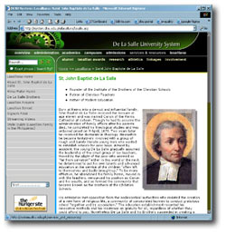

Documentation
Office : Updates
DLSU-System
Website
by: Precious Anne L. Taliwaga
We know what you’re thinking. It has been a long time
since we started working on the revised DLS System web site. It should have been replaced a long
time ago. The
newest System members are not yet included in it. Its presentation
can only be described as outdated… outmoded …
passé.
The waiting is over. Finally, the enhanced System web site
has already been launched. Among others, it now includes the
DLS-Araneta University campus and the DLS-Canlubang web site.
Just like the current Manila website, content and layout
management is less complicated with the use of active server
pages (ASP). In comparison to its old edition, the System
website is easier on the eyes with a more upbeat design, easier
navigation style and more comprehensive. The images included
are also more updated. The online version of the President’s
Report SY 2001-2002 is accessible here. The web site surely
gave justice to its print edition. (See related article)
Content-wise, it is more descriptive. In the Academic link,
each of the campuses is briefly described together with its
mailing address and contact numbers. We know that surfers
out there will find these information invaluable. An overview
of each major link is included with links to details in the
system school to its web site. The consolidated course offerings
grid provides a list of degree offerings per campus.
As the number of electronic files continue to grow and the
requests to make them accessible to the public shoots up,
we have compiled these files and encourage others to do so.
It is aptly called the multimedia bank. In the multimedia
bank, a compilation of different e-files has been systematically
categorized into stock photography, artworks, illustrations,
sounds, videos, animations and presentations, in their most
widely-used types of formats. Practically anybody can submit
files according to maximum file size allowed. They will also
be notified upon receipt of the files through e-mail. An administrator
will evaluate the submitted files before posting.
That’s not all, we have also included information regarding:
- Services and resources
- Scholarships/Grants for students and employees
- Lasallian awards for students and employees
- New research centers (La Salle Institute of Governance)
- Library Portal System (LPS)
- Social involvement and professional memberships
- Linkages
Affiliates
ID
by: Precious Anne L. Taliwaga
The De La Salle Alumni Association (DLSAA), DLSU Press,
Inc., BAMCREF, LASSO, DLS Credit Cooperative and the Yuchengco
Center now have their own smart card IDs. The new IDs have
magnetic strips and bar codes. This is in line with the standardization
of all campus-wide. campus-wide IDs.
The design for each ID is unique. The front bears the logo
of the office and the back displays information such as the
office’s complete mailing address and contact numbers.
It also bears the signature of the authorized signatory of
the office concerned.
The design for the System Personnel IDs has also been completed
and submitted to the President’s Office for approval.
For the research staff ID, a bar-coded ID, the design has
also been completed and implemented.
President's
Report
by: Precious Anne L. Taliwaga
“These voices are the students, faculty and staff members,
and administrators who have continued to excel in their own
fields and to serve beyond what is asked. Their performance
and accomplishments have encouraged more people from other
academic institutions and industry, both in the country and
abroad, to be in partnership with us in our various projects
and programs.”
So goes an excerpt from VOICES, The President’s
Report 2001-2002 edition. As System President Bro.
Rolando Dizon is about to answer a higher calling, his office
recapped the events that transpired in all campuses in the
said school year.
In VOICES, his office recounted past events, assessed the
present situation and projected the direction of the La Sallian
family, particularly in the next ten (10) years. This was
in time for the accomplishment of the GREENOVATION project
which kicked-off in the said school year. Greenovation is
the ten-year countdown to the centenary of the establishment
of the Brothers of the Christian Schools in the Philippines.
In order to reach the most number of people, the on-line
version was launched as part of the redesigned DLS System
web site in the President’s page under the Administration
link. The VOICES web site thrived in its simplicity as it
highlighted the messages it delivered in each page.
The web site did not veer away much from the design of the
printed edition. Printed flip open pages were presented as
popup windows online. The links to major topics are found
at the top and lower left parts of each page. As with the
printed edition, it basically made use of earth-tone colors
such as ash gray and shades of brown.
|